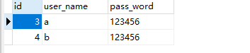
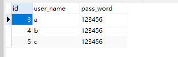

echo编辑整理，欢迎转载，转载请声明文章来源。欢迎添加echo微信(微信号：t2421499075)交流学习。 百战不败，依不自称常胜，百败不颓，依能奋力前行。——这才是真正的堪称强大！！！
安装完成之后，我们对Mycat的重要配置文件进行了解析，到这里已经对Mycat有了一定的认识，那么我们开始来启动Mycat并连接，做一些简单的配置和使用操作。
使用Mycat实现读写分离其实比较简单，只要关注他的两个配置文件schema.xml/server.xml。
<?xml version="1.0"?>
<!DOCTYPE mycat:schema SYSTEM "schema.dtd">
<mycat:schema xmlns:mycat="http://io.mycat/">
<schema name="userDB" checkSQLschema="true" sqlMaxLimit="100">
<table name="user" primaryKey="id" dataNode="dn1" />
</schema>
<dataNode name="dn1" dataHost="host1" database="test" />
<!-- 读写分离 -->
<dataHost name="host1" maxCon="1000" minCon="10" balance="1" writeType="0" dbType="mysql" dbDriver="native" switchType="-1" slaveThreshold="100">
<heartbeat>select user()</heartbeat>
<writeHost host="hostM" url="192.168.222.132:3306" user="root" password="123456">
<readHost host="hostS1" url="192.168.222.133:3306" user="root" password="123456" />
<readHost host="hostS2" url="192.168.222.134:3306" user="root" password="123456" />
</writeHost>
</dataHost>
</mycat:schema><?xml version="1.0" encoding="UTF-8"?>
<!-- - - Licensed under the Apache License, Version 2.0 (the "License");
- you may not use this file except in compliance with the License. - You
may obtain a copy of the License at - - http://www.apache.org/licenses/LICENSE-2.0
- - Unless required by applicable law or agreed to in writing, software -
distributed under the License is distributed on an "AS IS" BASIS, - WITHOUT
WARRANTIES OR CONDITIONS OF ANY KIND, either express or implied. - See the
License for the specific language governing permissions and - limitations
under the License. -->
<!DOCTYPE mycat:server SYSTEM "server.dtd">
<mycat:server xmlns:mycat="http://io.mycat/">
<!-- Mycat中有两个重要的标签，分别是user、system -->
<!-- system标签与系统配置有关 -->
<system>
<!-- 配置该属性的时候一定要保证mycat的字符集和mysql 的字符集是一致的。
如果需要配置特殊字符集，如：utf8mb4，则可以在index_to_charset.properties中配置，配置格式
为“ID=字符集”,例如：“224=utf8mb4”-->
<property name="charset">utf8</property>
<!-- 1为开启实时统计、0为关闭 -->
<property name="useSqlStat">0</property>
<!-- 0为需要密码登陆、1为不需要密码登陆 ,默认为0，设置为1则需要指定默认账户-->
<property name="nonePasswordLogin">0</property>
<property name="useHandshakeV10">1</property>
<!-- 1为开启全加班一致性检测、0为关闭 -->
<property name="useGlobleTableCheck">0</property>
<!-- SQL 执行超时 单位:秒-->
<property name="sqlExecuteTimeout">300</property>
<!-- 指定使用 Mycat 全局序列的类型。 0 为本地文件方式，1 为数据库方式，2 为时间戳序列方式，3 为分布式ZK ID 生成器，4 为 zk 递增 id 生成。 -->
<property name="sequnceHandlerType">5</property>
<!-- 必须带有MYCATSEQ_或者 mycatseq_进入序列匹配流程 注意MYCATSEQ_有空格的情况 -->
<property name="sequnceHandlerPattern">(?:(\s*next\s+value\s+for\s*MYCATSEQ_(\w+))(,|\)|\s)*)+</property>
<!-- 子查询中存在关联查询的情况下,检查关联字段中是否有分片字段 .默认 false -->
<property name="subqueryRelationshipCheck">false</property>
<property name="sequenceHanlderClass">io.mycat.route.sequence.handler.HttpIncrSequenceHandler</property>
<!-- 默认为type 0: DirectByteBufferPool | type 1 ByteBufferArena | type 2 NettyBufferPool -->
<property name="processorBufferPoolType">0</property>
<!-- 分布式事务开关，0为不过滤分布式事务，1为过滤分布式事务（如果分布式事务内只涉及全局表，则不过滤），2为不过滤分布式事务,但是记录分布式事务日志-->
<property name="handleDistributedTransactions">0</property>
<!-- off heap for merge/order/group/limit 1开启 0关闭 -->
<property name="useOffHeapForMerge">0</property>
<!-- 单位为m -->
<property name="memoryPageSize">64k</property>
<!-- 单位为k -->
<property name="spillsFileBufferSize">1k</property>
<property name="useStreamOutput">0</property>
<!-- 单位为m -->
<property name="systemReserveMemorySize">384m</property>
<!--是否采用zookeeper协调切换 -->
<property name="useZKSwitch">false</property>
<!--如果为 true的话 严格遵守隔离级别,不会在仅仅只有select语句的时候在事务中切换连接-->
<property name="strictTxIsolation">false</property>
<property name="useZKSwitch">true</property>
</system>
<!-- name="root" 定义登录用户名 -->
<user name="root">
<!-- 定义了登录密码 -->
<property name="password">123456</property>
<property name="schemas">userDB</property>
</user>
</mycat:server>进入bin目录
./mycat start首先我们在主服务器上增加两条数据，由于我们实现mysql主从复制，这个时候增加的两条数据，其他两台从服务器都会同时增加。数据如下：

在主服务器上添加的数据由于MySQL主从复制，所以在每一台服务器上看到的都是一样的数据，但是在从服务器上添加的数据主服务器和另外一台服务器上不会有，我们就利用这个特性添加。
在从服务器192.168.222.134上添加一条数据，如下：

134服务器上就具备了其他服务器不具备的数据，由于我们在schema中配置了写功能服务器132、读133/134两台，所以Mycat读取数据的时候应该是随机读取133/134中的某一台，我们登陆Mycat然后打开user表，多刷新几次就可以看到id为5的那条数据时有时无
登陆Mycat报错，先检查Mycat是否已经成功启动，如果没有启动可以进入mycat文件下logs目录中，打开wrapper.log查看原因